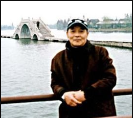
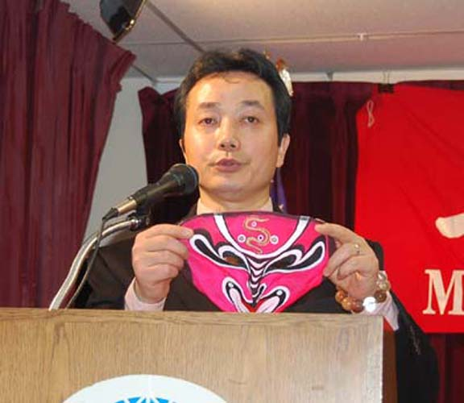
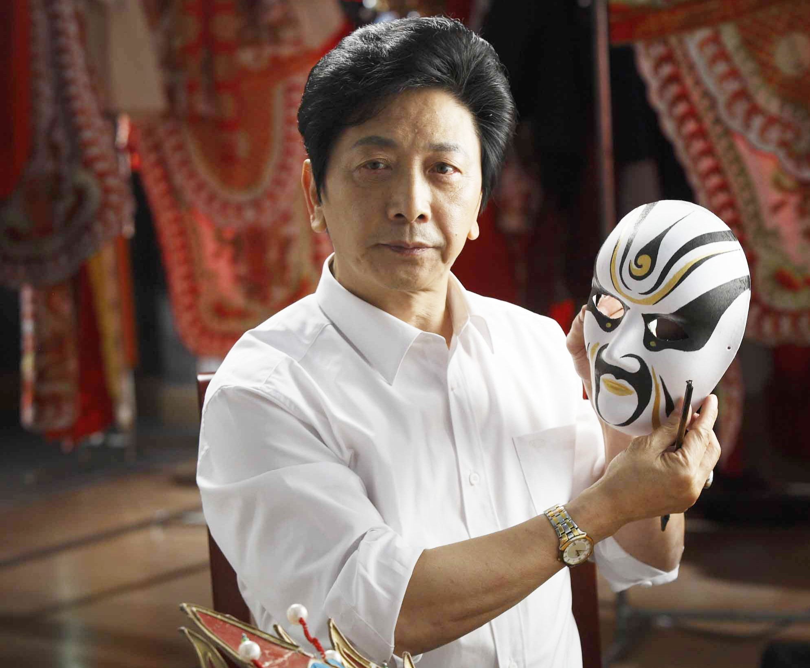

一生坚守 传承百年变脸技艺

王道正是知名川剧表演艺术家，川剧变脸国家级代表性传承人。
从艺六十余年，深耕变脸技艺，创新出快三张、回脸等高难度技法，业界尊称“变脸王”。
常年远赴海内外演出，向世界展示巴蜀戏曲魅力，积极收徒授课，全力推动变脸技艺代代相传。

何洪庆是著名川剧变脸表演艺术家，非遗技艺优秀传承人。
他精通扯脸、抹脸等多种变脸技法，舞台表演大气沉稳，兼具传统韵味与现代美感。
深耕戏曲教育与非遗传播，走进校园与社区普及变脸知识，培养大批青年戏曲爱好者，让传统艺术扎根民间。

彭登怀是川剧界德高望重的艺术家，变脸技艺集大成者。
他在传统变脸基础上大胆创新，将技巧与剧情完美融合，表演极具感染力与观赏性。
致力于非遗文化国际化传播，多次登上国际舞台，让川剧变脸成为世界认识中国戏曲的重要名片。